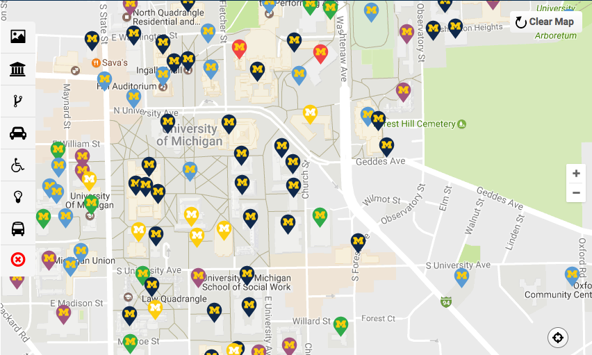
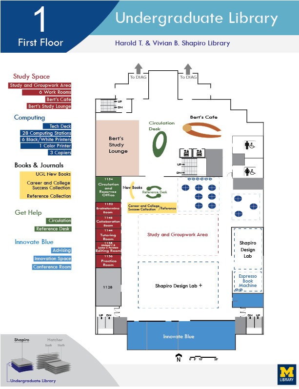
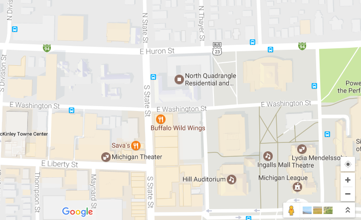
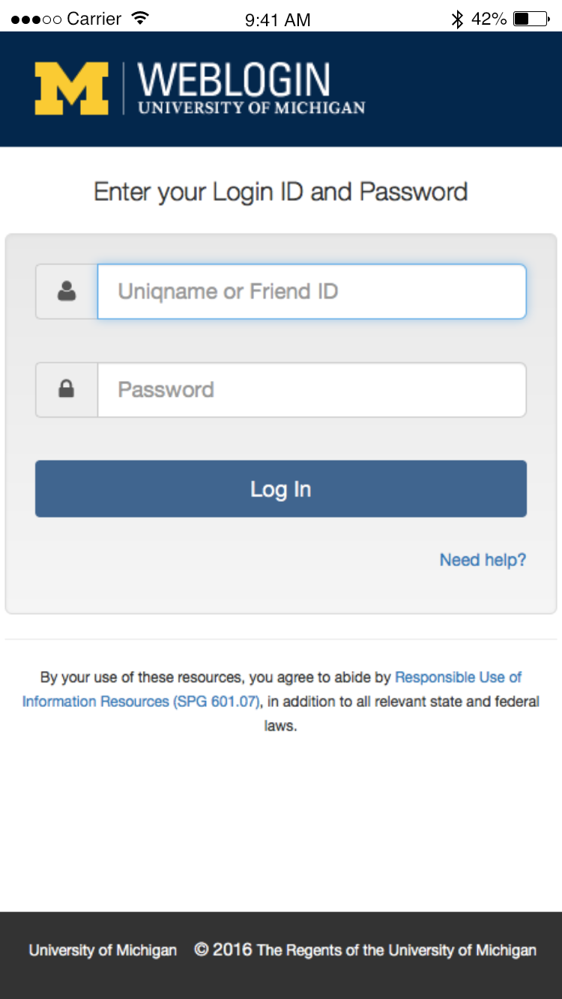
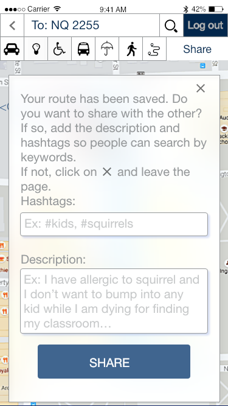
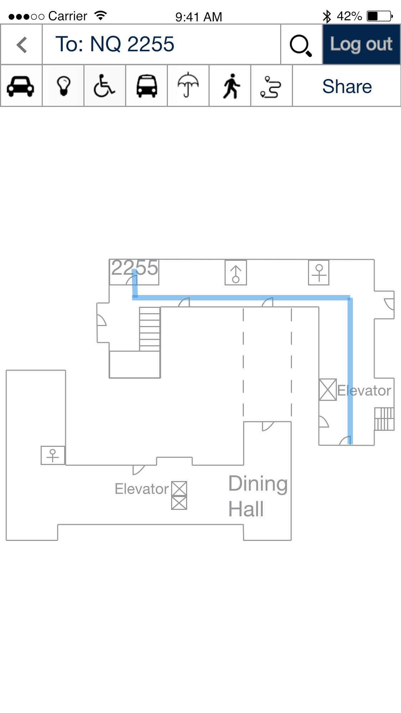
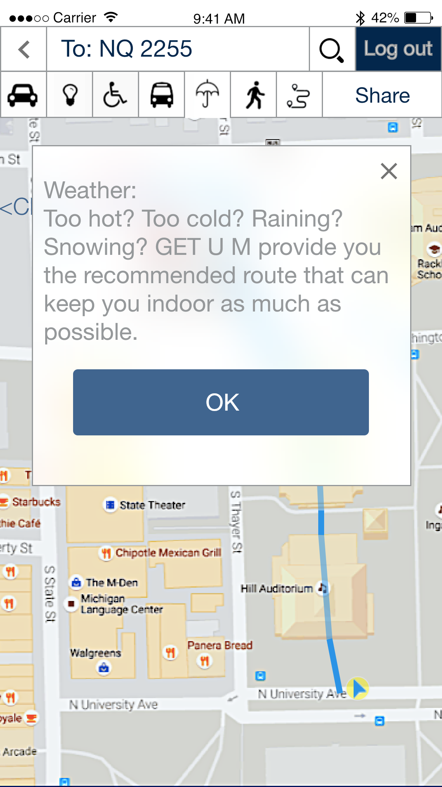

GET U M is an App that provides navigation for UM students to find their way around campus. The design philosophy of this project focused on decreasing the anxiety and the “outsider” feeling incoming students experience by helping them find the locations efficiently.
My Role
Skill Set: Interview | Brainstorming | Competitive Analysis | Sketching | Storyboarding | Persona | Paper Prototype | User Testing | Hi-fi Prototype with Adobe XD
I worked on this individual design project in the course: Introduction to Interaction Design. I experimented and iterated through the comprehensive design process as introduced by Jon Kolko in his book Thoughts on Interaction Design (2007) : “Define, Discover, Synthesize, Construct, Refine, and Reflect.”
Define the Problem
Incoming UM students get lost easily on campus when they are trying to find their classrooms. Having difficulties for finding locations can bring more stress to their lives.
After talking to 6 potential target users and doing the competitive analysis, I found that the existing tools were not customized enough to assist students to find their classrooms. People were enduring the situation with limited choices of tools. I found that many new UM students unavoidably experienced the anxiety of getting lost on campus.
Existing tools:

UM campus map

floor plan

google map
Discover Needs
By conducting the interviews with 6 incoming students, I found a general pattern of finding locations and the common obstacles people encountered:
Scattered and incomprehensive location information on different platforms
Complicated structure of the buildings
Discomfort in asking for directions from strangers
Extra time wasted for finding directions
The needs of UM students for finding the accurate location is neglected because people think they will get familiar with the campus after 2 or 3 months when they are not that new to the school. Therefore, they bear the situation and think it is just a temporary condition.
Design Process
Approach
The main design approach I used was user-centered design. I focused on the users so the devices can meet user needs.
Balance between Convergent and Divergent Thinking
Convergent: Start
My initial idea was an App customized for UM incoming students specially designed to be more powerful in finding classroom.
Divergent: Brainstorming
I then drew all the possibilities that came to my mind and discussed those ideas with target users.
I talked to more focused users with my storyboards. Through the interviews, users let me know that most of them were familiar with Google Maps and GPS function on their cell-phones. Therefore, my idea converged again with my original idea of creating an App. Then I created the persona accordingly. The process helped me modify the details and provided more solid features for my App.
I did 3 versions of low-fidelity paper prototypes in total. With user testings, I re-organized the order of the buttons and re-phrased the instructions according to the feedback, and kept refining my design and ended up with this version:
Convergent: Finalizing Solution with User Testings
Through the iteration process, I ended up with several high-fidelity prototypes created by Adobe XD. The hi-fi prototype created a greater sense of reality while doing the user testing. The feedback from this stage reflected more details, such as wording, or button ordering, about the features
The key concept of my final design is a unified platform which gathers all the information related to a student’s personal academic schedule and classroom locations. The main features include “unified login”, “indoor maps”, “customized searching”, and “sharing routes.”
Key Features

Unified Login
To avoid duplicate logins on different platforms, "Get U M" provides a unified login page that users can use UM web login page to log in the system.
Sharing Routes
People tend to stick to the first path they found to get to the classroom. But some people are good at finding shortcuts, and some choose the path based on personal reasons. The current system we have now does not provide a platform to share the useful information. Thus, recording and sharing the route with others become one important feature in "Get U M".


Indoor Maps
According to the user research, students lose their sense of direction because of the complicated architecture. Therefore, the Indoor Map is a critical function to help students find the destination inside the building.
Customized Searching
I added further details and explanations to each searching feature to let the users know how do they work. And the users are able to search the route by the hashtags and see how the other arrive at the same destination.

Hi-fi prototype
Reflection
I was satisfied that many peers gave me positive feedback on my idea and confessed that they never thought about improving the condition or that there was even a problem. The thing we think is petty affects our life without our notice. A small problem such as having obstacle for finding the classroom can be deeper when we investigate the problem closely. People endure what they have at hand. The stress of life is accumulated from all the little endurances we have in daily life. By talking to people and making them facing those delicate aspects of life, people inspect their own life at the same time, which I find valuable.
 Amy Chen
Amy Chen